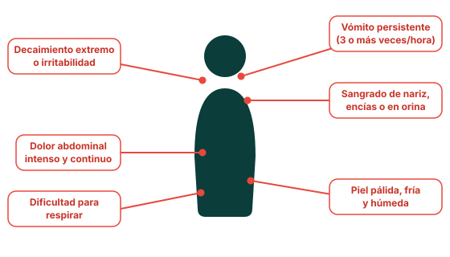

Información técnica
Clasificación clínica y manejo del dengue
Contenido dirigido a personal de salud: definición operacional de caso, clasificación de gravedad OMS/OPS, criterios de hospitalización y marco normativo vigente en México.
Definición operacional
Caso sospechoso de dengue
Persona que vive o ha viajado, en los últimos 14 días, a un área con transmisión de dengue, que presenta fiebre y al menos dos de los siguientes criterios:
Fuente: CDC, Guías para clasificar el dengue; OPS, Directrices para el diagnóstico clínico y tratamiento del dengue (2022). Ver referencias completas.
Clasificación OMS/OPS (2009, vigente)
Tres categorías de gravedad
| Categoría | Características | Grupo de manejo |
|---|---|---|
| Dengue sin signos de alarma | Caso sospechoso sin criterios de signos de alarma, sin comorbilidades de riesgo ni condiciones de riesgo social. | Grupo A — manejo ambulatorio |
| Dengue con signos de alarma | Dolor/sensibilidad abdominal, vómito persistente, acumulación clínica de líquidos, sangrado de mucosas, letargo/irritabilidad, hepatomegalia >2 cm, aumento progresivo del hematocrito. | Grupo B — manejo hospitalario |
| Dengue grave | Choque o dificultad respiratoria por extravasación grave de plasma, sangrado grave, o compromiso grave de órganos (miocarditis, hepatitis con ALT/AST >1000 UI, encefalitis). | Grupo C — manejo hospitalario / posible UCI |
Fuente: OPS, Algoritmos para el manejo clínico de los casos de dengue (2024); CDC, Guías para clasificar el dengue.
Vigilancia clínica
Signos de alarma a vigilar activamente

Dato clínico clave
La irritabilidad o el letargo en un paciente con dengue pueden ser manifestación de hipoxia cerebral secundaria a hipovolemia. La extravasación de plasma no tratada de forma oportuna conduce a choque hipovolémico. Por ello, la fase crítica (24–48 h tras la defervescencia) requiere vigilancia estrecha incluso con signos vitales aparentemente estables.
Toma de decisiones
Criterios y grupos de manejo
Marco normativo en México
Vigilancia epidemiológica y notificación
La NOM-032-SSA2-2014, para la vigilancia, prevención y control de enfermedades transmitidas por vector, establece los criterios para la vigilancia epidemiológica, diagnóstico, tratamiento, promoción de la salud y participación comunitaria en enfermedades como el dengue en México.
- Notificación obligatoria: todo caso probable de dengue debe notificarse de manera inmediata a la unidad de vigilancia epidemiológica correspondiente.
- Estudio epidemiológico de caso: se debe realizar en las primeras 24 horas posteriores a la identificación del caso probable.
- Confirmación por laboratorio: mediante pruebas serológicas (NS1, IgM) o moleculares (PCR), según el día de evolución y los lineamientos del InDRE.
- Acciones de control vectorial: coordinadas con CENAPRECE, incluyendo descacharrización, nebulización y control larvario en el perímetro del caso.